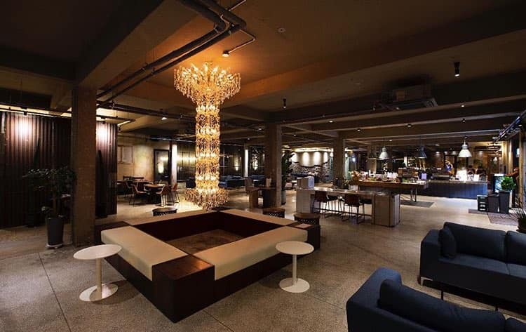
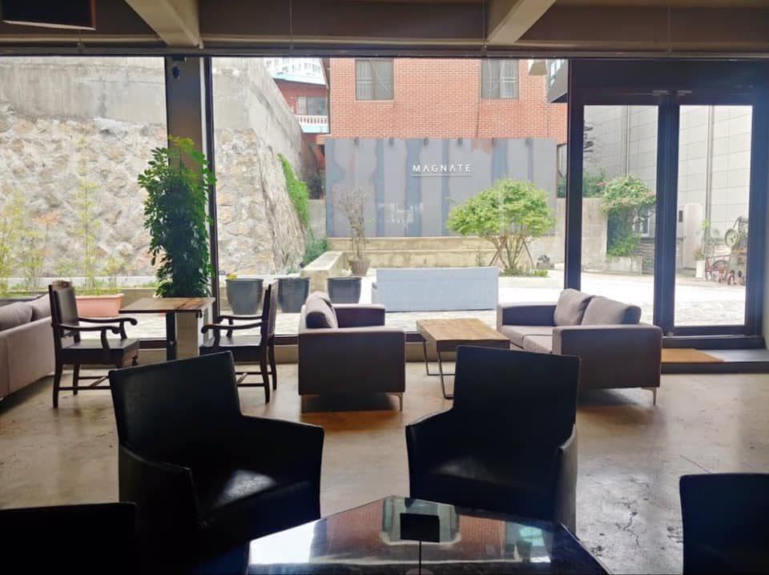

Nosotros
Conoce nuestra historia
En el 2019, una apasionada del café decidió dar vida a su sueño: Magnate. Inspirada por su amor por los aromas ricos y las conversaciones animadas que surgen alrededor de una taza de café, decidió crear un refugio donde la calidad y la experiencia se fusionaran.

Armada con una devoción inquebrantable por la excelencia, recorrió el mundo en busca de los granos más finos, trazando una ruta desde las montañas de Colombia hasta las plantaciones de Etiopía. Cada grano seleccionado con esmero se convirtió en un componente esencial de la identidad de Magnate.
El local, cuidadosamente diseñado, abrió sus puertas como un santuario para los amantes del café. Cada detalle, desde la música que acaricia los oídos hasta la decoración que abraza a la vista, fue pensado para crear una experiencia única. Magnate no sólo se convirtió en un lugar para disfrutar del café de calidad, sino también en un punto de encuentro donde las historias fluían tan libremente como el café recién preparado.
